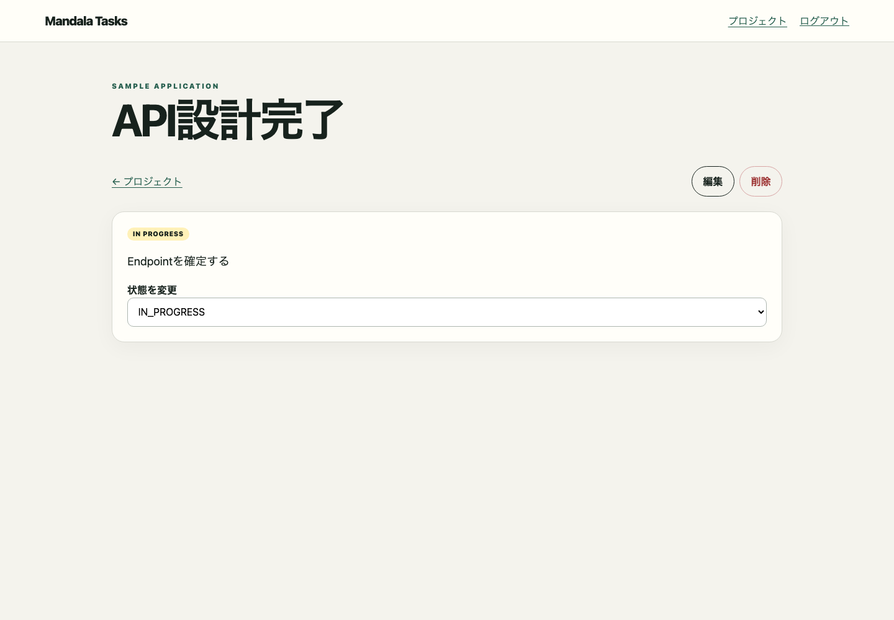

Deterministic Playwright capture for task-update
{}
mandala/snapshots/ui/task-update.jsonscreen-state:/tasks/{id}:success.task-update
- banner:
- link "Mandala Tasks":
- /url: /projects
- navigation "メイン":
- link "プロジェクト":
- /url: /projects
- button "ログアウト"
- main:
- text: SAMPLE APPLICATION
- heading "API設計完了" [level=1]
- link "← プロジェクト":
- /url: /projects/1
- link "編集":
- /url: /tasks/10/edit
- button "削除"
- text: IN PROGRESS
- paragraph: Endpointを確定する
- text: 状態を変更
- combobox "状態を変更":
- option "TODO"
- option "IN_PROGRESS" [selected]
- option "DONE"
- option "BLOCKED"Mandala Tasks
プロジェクト
ログアウト
SAMPLE APPLICATION
API設計完了
← プロジェクト
編集削除
IN PROGRESS
Endpointを確定する
状態を変更
TODO
IN_PROGRESS
DONE
BLOCKED{colorScheme=light, featureFlags={}, locale=ja-JP, role=ADMIN, time=2026-01-15T03:00:00.000Z, timezone=Asia/Tokyo, viewport={height=1000, width=1440}}/tasks/10/tasks/{id}task-updatesuccess{}
mandala/snapshots/ui/task-update.json